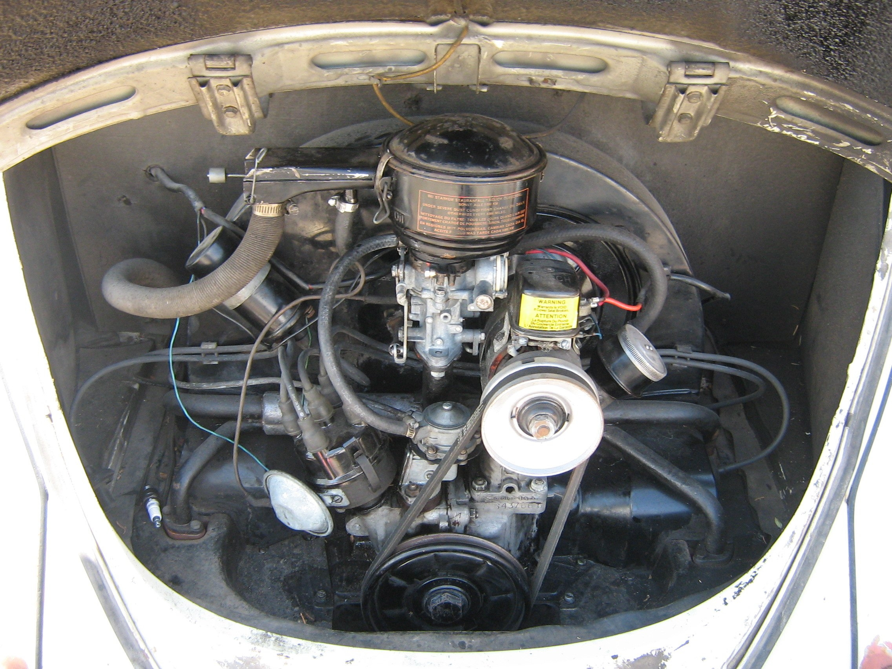

O quê
Tubo adequado, clamp e grommet na passagem da chapa no Type 1.
Cap.2 · F-P0-4 · ~4 min
Tubo adequado, clamp e grommet na chapa.

vídeo em elaboração · unpublished
Still tipada — linha de combustível.
Narrador: Oliver
Tubo adequado, clamp e grommet na passagem da chapa no Type 1.
Atrito e vazamento nesta linha são risco de fogo.
Dar «ok» sem olhar a passagem na chapa.
F-P0-5 — massas, caixa e 6 V / 12 V.